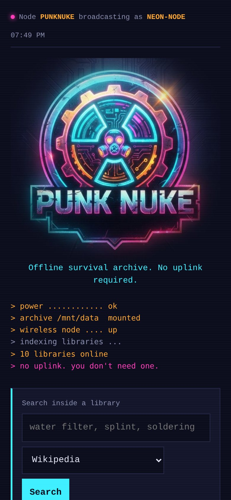
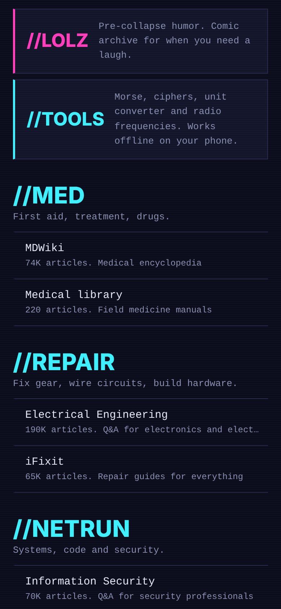
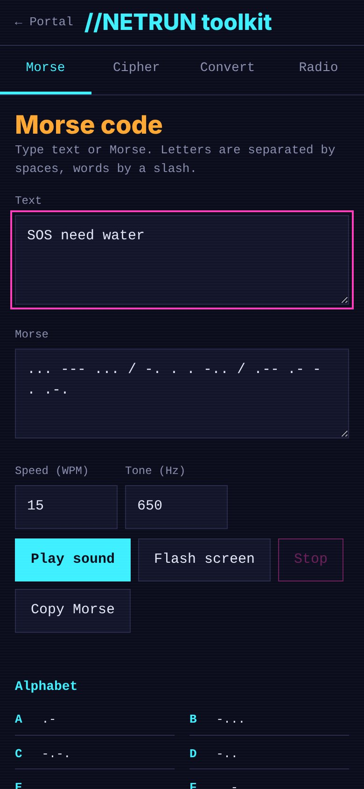
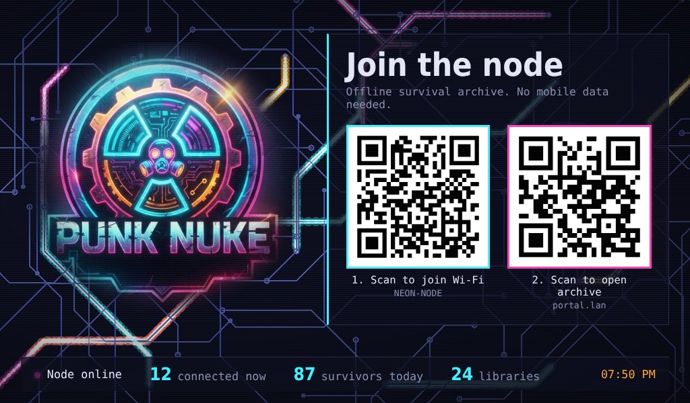
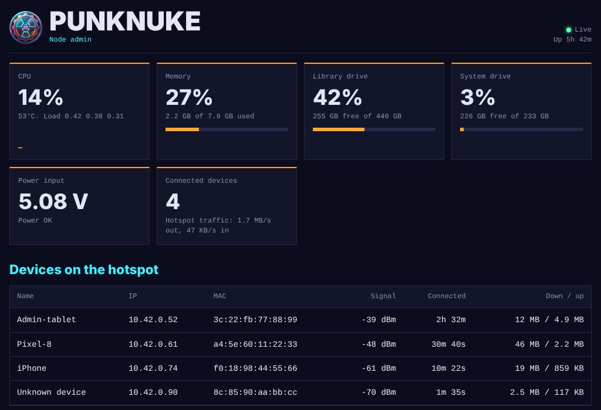

What happens when you connect
No app, no password, no mobile data. It works like hotel Wi-Fi, except the login page is the whole point.
- Scan the QR codeThe screen on the wearer's back shows a code that joins the NEON-NODE network.
- The portal pops upEvery address resolves to the box, so the phone opens the PunkNuke page by itself.
- Search the archiveWikipedia, medical references, repair guides and Q&A sites, all served from an SSD in the box.
- Take the tools with youThe toolkit runs on your own phone: Morse, ciphers, converters, radio frequencies.
Inside the node
The portal sorts everything into sections, named the way the character would.
//MED
MDWiki and field-medicine manuals: first aid, treatment, drugs.
//REPAIR
iFixit guides plus electronics, Arduino, Raspberry Pi and DIY Q&A.
//NETRUN
Linux, security and programming references, and freeCodeCamp.
//SURVIVE
Water, food, shelter, knots, outdoors and sustainability.
//ARCHIVE
Wikipedia, Wikivoyage, Wiktionary, Wikibooks and anything else added later.
//TOOLS
Morse with sound and screen flashing, cipher decoder, unit and antenna calculators, radio reference.
//LOLZ
An offline comic archive. Survivors need to laugh too.
Admin
A password-protected dashboard on a tablet: temperature, drives, input voltage, connected phones, reboot and shutdown.
Screens
Shown with sample data.





Hardware
About 9-15 W before the screen. A 20,000 mAh bank runs it for roughly 4-6 hours.
| Part | Original build |
|---|---|
| Computer | Raspberry Pi 5 |
| System drive | 256 GB NVMe, Raspberry Pi OS Lite 64-bit |
| Library drive | 480 GB SATA SSD on USB 3 |
| Wi-Fi | Onboard Wi-Fi runs the hotspot |
| Back screen | 7" HDMI display |
| Power | 20,000 mAh powerbanks in MOLLE pouches |
Build your own
On a fresh Raspberry Pi OS Lite with the library drive mounted at /mnt/data. The README has every step.
# get the code git clone https://github.com/cainedk/punknuke.git cd punknuke # set it up, in this order sudo bash scripts/setup-portal.sh wlan0 NEON-NODE sudo bash scripts/setup-redirect.sh wlan0 sudo bash scripts/install-web.sh sudo bash scripts/setup-admin.sh sudo bash scripts/setup-kiosk.sh # optional back screen sudo bash scripts/setup-comics.sh # optional //LOLZ # fill the library in the background nohup bash scripts/download-content.sh > ~/download.log 2>&1 &
The hotspot is open and unencrypted by design. Treat it as a public prop, not a private network.
Made by a human and an AI
PunkNuke was built step by step in one long conversation on claude.ai. Caine ran each command on the Pi and pasted back what happened; Claude adjusted the scripts until everything worked.
Caine
- The concept and the cyberpunk character
- Hardware build and costume integration
- The PunkNuke logo artwork
- Every design decision, and all testing on the real device
Claude
- Setup scripts for the hotspot, captive portal, library and services
- The portal, toolkit, comic reader, admin dashboard and back screen
- Debugging along the way, from a USB SSD dropping off the bus to broken search links
Library content comes from Kiwix and is downloaded by the scripts, not stored in the repository. Code is MIT licensed; the PunkNuke name and logo belong to the author.